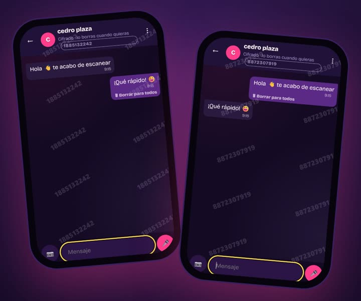

¡Ay, la Chancla!
CarrerasHumor latino
¡Corre, que mamá te alcanza! Esquiva, coge poderes y aguanta todos los metros que puedas antes de que vuele la chancla.
Con tu número ven tus fotos, saben dónde trabajas y se lo pueden pasar a cualquiera. Con Velo Velo enseñas un código, te escanean y ya estáis hablando.
Funciona en el navegador. En iPhone ábrelo en Safari; en Android, en Chrome.

Sin descargar nada y sin registrarte.
La otra persona lo escanea con su cámara.
Sin números de por medio. Y si no sale bien, «velo velo».
Tocas y juegas. Perfectos para retar a tus amigos y para los ratos muertos.
¡Corre, que mamá te alcanza! Esquiva, coge poderes y aguanta todos los metros que puedas antes de que vuele la chancla.
Vuela, bebe néctar y esquiva. Fácil de aprender y difícil de soltar: reta a tus amigos a superar tu récord.
¿Quién es el más chismoso del grupo? Mete tu chat exportado de WhatsApp y descúbrelo. Se analiza en tu móvil: no se sube nada.